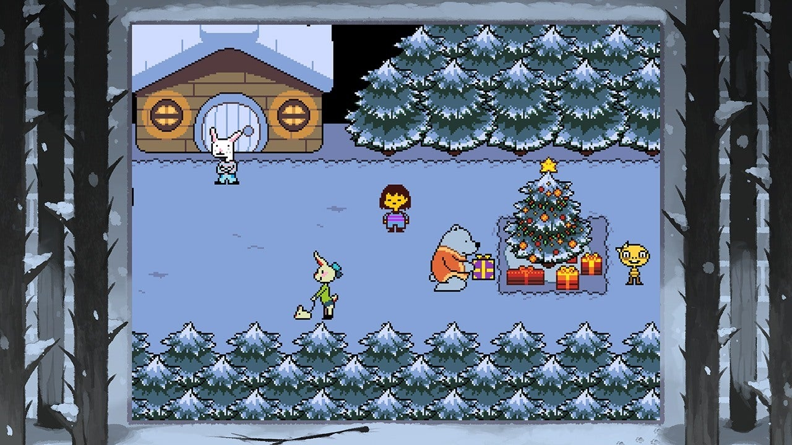
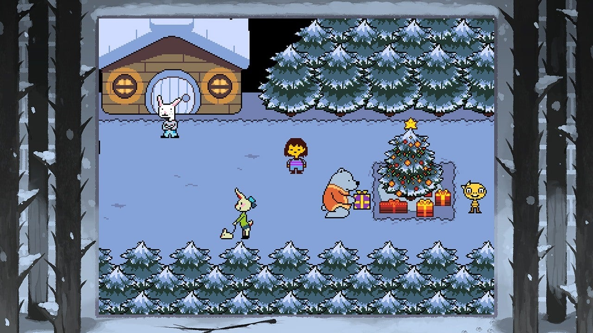
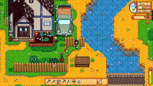

recomendações de jogos
God of War

God of Warüîó √© um jogo de a√ß√£o e aventura, onde voc√™ acompanha a vida mortal de Kratos enquanto ele tanta sobreviver. Aqui, Kratos volta ser pai e mentor do pr√≥prio filho Atreus. O jogador poder√° controlar os dois personagens, enquanto viaja pelo reino N√≥rdico, enfrentando Deuses e monstros da mitologia viking.
Com belos gráficos, uma história envolvente, ótima jogabilidade e novas mecânicas, já que terá agora dois personagens ao seu controle. God of War é um jogo que te prende do início ao fim!
Marvel's Spider-Man: Miles Morales
Para os f√£s da Marvel e dos super-her√≥is, o Marvel's Spider-Man: Miles Moralesüîó n√£o poderia ficar de fora da lista. Voc√™ assume o papel do Miles Morales em sua jornada para se tornar o novo Homem-Aranha. Siga os passos de Peter Park e enfrente desafios e inimigos inusitados que amea√ßam a seguran√ßa de New York.
Se pendure em teias nas alturas da cidade, melhore as habilidades para derrotar supervilões e assuma a responsabilidade do Homem-Aranha neste jogo imersivo e realista!
Elden Ring

Elden Ringüîó √© um RPG de a√ß√£o, com um gigantesco mundo a ser explorado. Com dezenas de dungeons a serem examinadas, adquirir runas, derrotas chef√µes e muito mais, tudo com um visual macabro e de cair o queixo.
Uma curiosidade interessante, é que o game também conta com o envolvimento de George R.R. Martin na produção do roteiro.
Hades

Hadesüîó √© um roguelike que possui elementos de a√ß√£o e RPG. Neste game, o jogador ir√° controlar Zargreus, filho do Deus dos mortos Hades, que possui como objetivo sair do submundo. Com um estilo de combate bastante din√¢mico, o jogo te ensina da pior maneira ‚Äúaprenda morrendo‚Äù a passar das fases, sem ser frustrante.
O game possui mecânicas para ajudar o personagem ao longo do jogo, com itens variados, métodos de melhorar o status. Porém, o que atrai a atenção é a mecânica de bênçãos dos deuses do olimpo, que proporcionam melhorias aleatórias.
Undertale

Undertaleüîó √© um exerc√≠cio deliciosamente inventivo em subverter expectativas. Ele sabe que voc√™ est√° jogando um RPG e tira com a sua cara a cada rodada, lembrando seus h√°bitos de salvar o game, seguir suas decis√µes de hist√≥ria e constantemente ajustar a si mesmo em maneiras surpreendentes de lembrar que as a√ß√µes possuem consequ√™ncias inesperadas.
Uma envolvente e emocional história sustenta tematicamente a mensagem subjacente de Undertale: cada escolha que fizer importa não somente a você, mas também para as pessoas ao seu redor. É subversivo, ocasionalmente confuso, re-jogável, sem remorso melancólico, e um membro digno da fraternidade dos maiores games de PC de todos os tempos.
Hollow Knight

Hollow Knightüîó √© um dos melhores games de g√™nero Metroidvania do mercado atual. √â lindo, expansivo e cheio de segredos incr√≠veis para descobrir, o que manter√° o jogador preso por horas a fio. O reino de Hallownest √© brutal, e o Reino da Noite n√£o vai facilitar, fazendo com que muitos desistam no come√ßo -- mas quando a marcha finalmente engata, fica quase imposs√≠vel de largar.
Suas cavernas se abrem e oferecem múltiplos caminhos para você a qualquer momento, mas não importa qual caminho decida ir, encontrará chefes desafiadores para encarar e poderes significantes para torná-lo ainda mais forte. Apesar de ser um jogo massivo, Hollow Knight só ficou maior desde seu lançamento, em 2019. A desenvolvedora Team Cherry lançou várias atualizações grátis com novas áreas e chefões, um mais difícil que o outro. Se você quiser apenas obter os créditos, encontrar o verdadeiro final ou ir ainda mais longe, Hallownest é um mundo que vale a pena ser explorado.
Stardew Valley

Stardew Valleyüîó faz com que o mundano fique mais bonito. N√£o √© uma reinven√ß√£o da roda, mas traz a melhor ess√™ncia de Harvest Moon e a simplifica e deixa mais acess√≠vel em um game verdadeiramente sedutor. Tranquilo e propositalmente provincial, Stardew celebra o simples prazer de assistir aos frutos do seu trabalho crescerem.
Um universo de oportunidades acena desde os primeiros momentos, e apesar do guia disponível ao jogador, você fica livre para experimentar, mudar de ideia, e jogar do modo mais eficiente (ou não) que desejar. As escolhas vão angariar uma gravidade de consequências, mas aprender o que funciona e o que não funciona, mexer no gerenciamento do relógio e descobrir formas cada vez mais eficazes de executar seus dias é metade da diversão.
Dead Cells

Dead Cellsüîó oferece flexibilidade de uma maneira que poucos games fazem. Cada jogatina √© lindamente detalhado e os n√≠veis variantes levam voc√™ a estourar o limite de sua habilidade, e leva voc√™ √† mis√©ria quando fica confort√°vel demais. H√° n√≠veis de estrat√©gia e t√°tica envolvidos, n√£o apenas nas escolhas imediatas que faz, mas no geral do game, tornando-o em um dos melhores de a√ß√£o em plataforma.
Imagens dos Games
God Of War


Marvel's Spider-Man: Miles Morales


Elden Ring

Hades


Undertale
 

Hollow Knight


Stardew Valley
Dead Cells